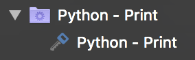

Tokens
You may already be familiar with tokens in Royal TS/X from other object types, like Command- and Key Sequence Tasks. In the context of dynamic folder scripts, tokens allow you to inject values of the dynamic folder into your scripts. You can, for instance use the $EffectiveUsername$ and $EffectivePassword$ tokens to inject credentials into your scripts. This is useful to ensure no confidential data is stored in plain-text inside your script's content. It also allows you to store parameters of your scripts in a central location instead of somewhere in the scripts.
Here's a simple Python example:
import json
jsonStr = json.dumps(
{
"Objects": [
{
"Type": "Credential",
"Name": "$Name$"
}
]
}
)
print(jsonStr)
In line 8 we're injecting the $Name$ token into the credential's Name property value.
Here's what this gets you in Royal TSX:

The name of the credential created from rJSON is the same as the dynamic folder's name. Obviously, this isn't quite a real world example but it should get the point over.
Basically it's up to you how/if you want to use tokens in your scripts. If you're for instance calling a web service that requires authentication in your script, it makes sense to not store the credentials directly in your script. Instead, you should save them in the dynamic folder's credential settings. You may even store the URL of your web service endpoint in a custom property instead of directly in the script and refer to it using the $CustomProperty.AlphanumericTitleWithoutSpaces$ token.
Special Tokens for Dynamic Credential scripts
DynamicCredential.EffectiveID
The $DynamicCredential.EffectiveID$ token can be used to retrieve the ID of the dynamic credential that is to be resolved. Because you can declare multiple dynamic credentials in your dynamic folder script, you have to somehow "know" which one should be returned by your dynamic credential script when it's executed.
Here's a simple Python example:
Dynamic Folder Script:
import json
print(json.dumps({
"Objects": [{
"Type": "DynamicCredential",
"Name": "Dynamic Credential 1",
"ID": "01"
}, {
"Type": "DynamicCredential",
"Name": "Dynamic Credential 2",
"ID": "02"
}]
}))
Dynamic Credential Script:
import json
credential_id = r"$DynamicCredential.EffectiveID$"
if credential_id == "01":
username = "user1"
password = "pass1"
elif credential_id == "02":
username = "user2"
password = "pass2"
print(json.dumps({
"Username": username,
"Password": password
}))
The dynamic folder script creates two dynamic credentials. These two credentials are assigned the IDs "01" and "02" respectively.
In the dynamic credential script, we use the $DynamicCredential.EffectiveID$ token to refer to the Dynamic Credential's ID. Then, depending on whether the ID is "01" or "02", we return different values for username and password.
Target Token Prefix
The Target. token prefix in Dynamic Credential scripts can be used to refer to properties of the connection that resolves the dynamic credential. This is useful if you're, for instance, using a PAM system and need to know which connection requested a particular credential. For example, to access the name of the connection that invoked the dynamic credential script, you can use $Target.Name$.
Note
Support for the Target. token prefix was added in the following product versions:
- Royal TS (for Windows) 6.0
- Royal TSX (for macOS) 5.0
- Royal Server 4.0